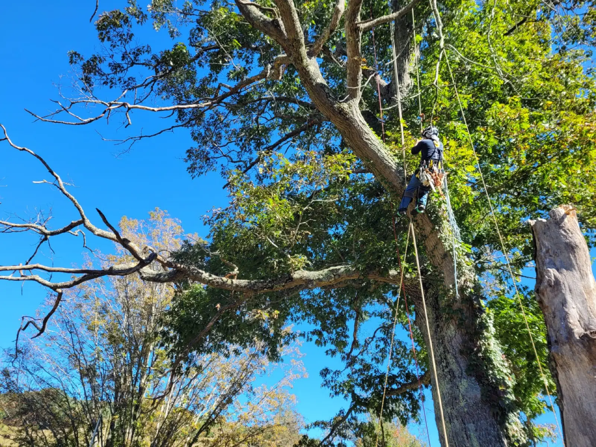
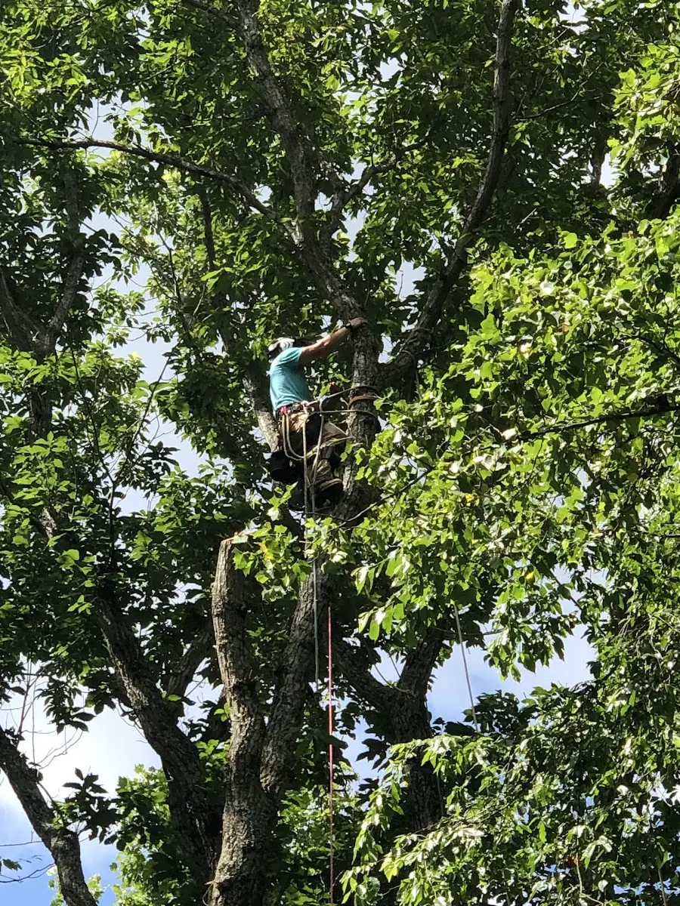
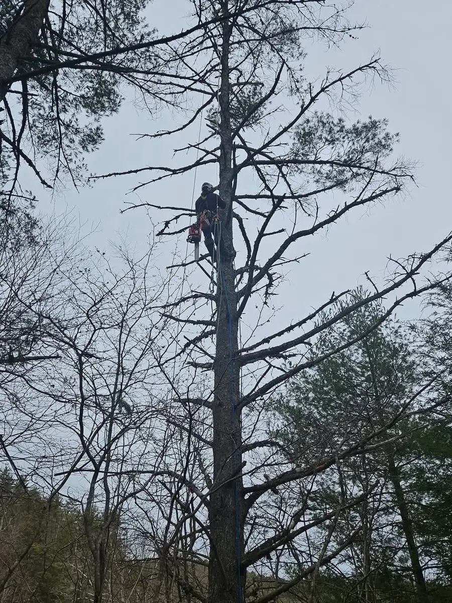
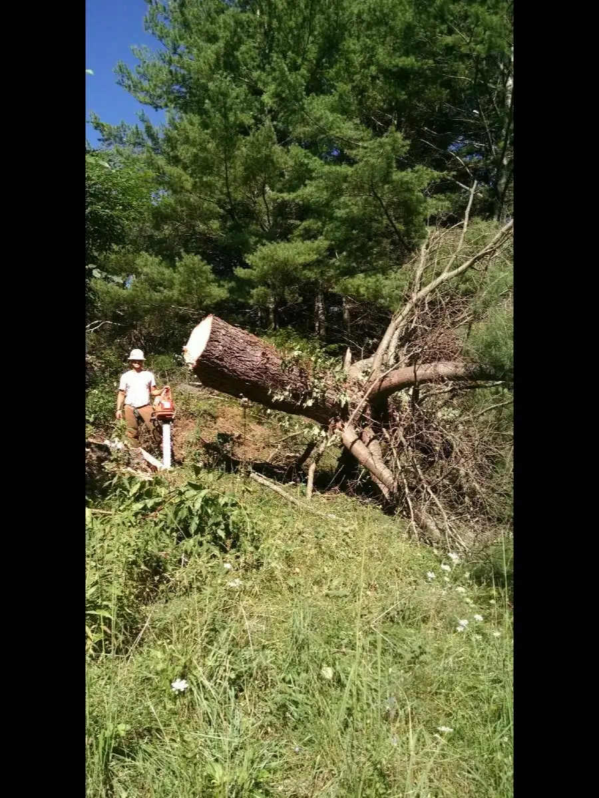
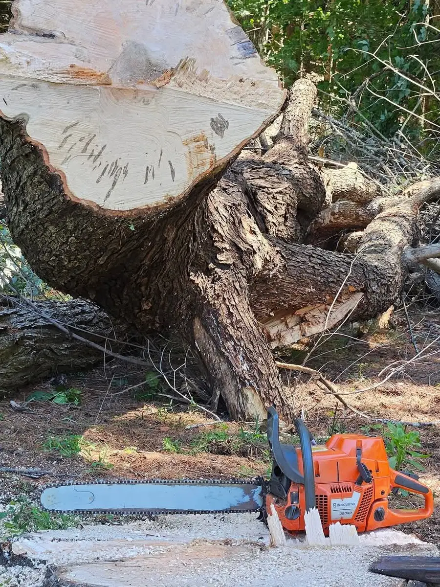
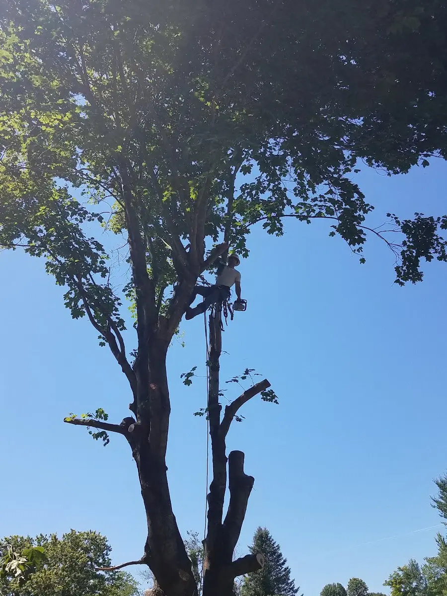
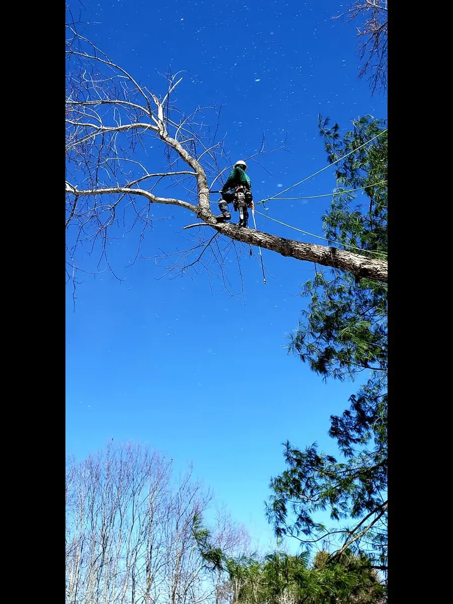
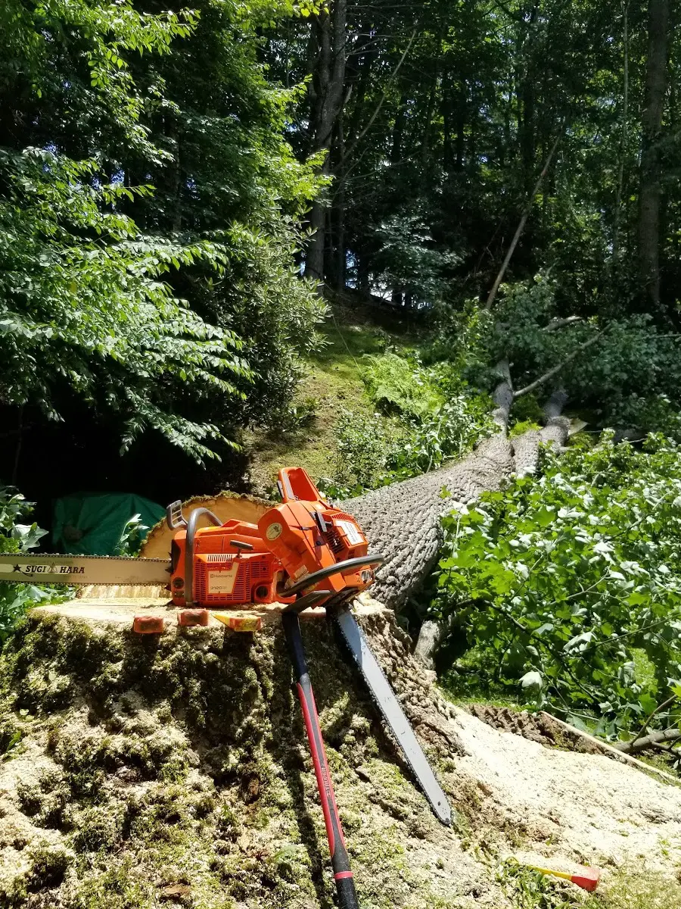
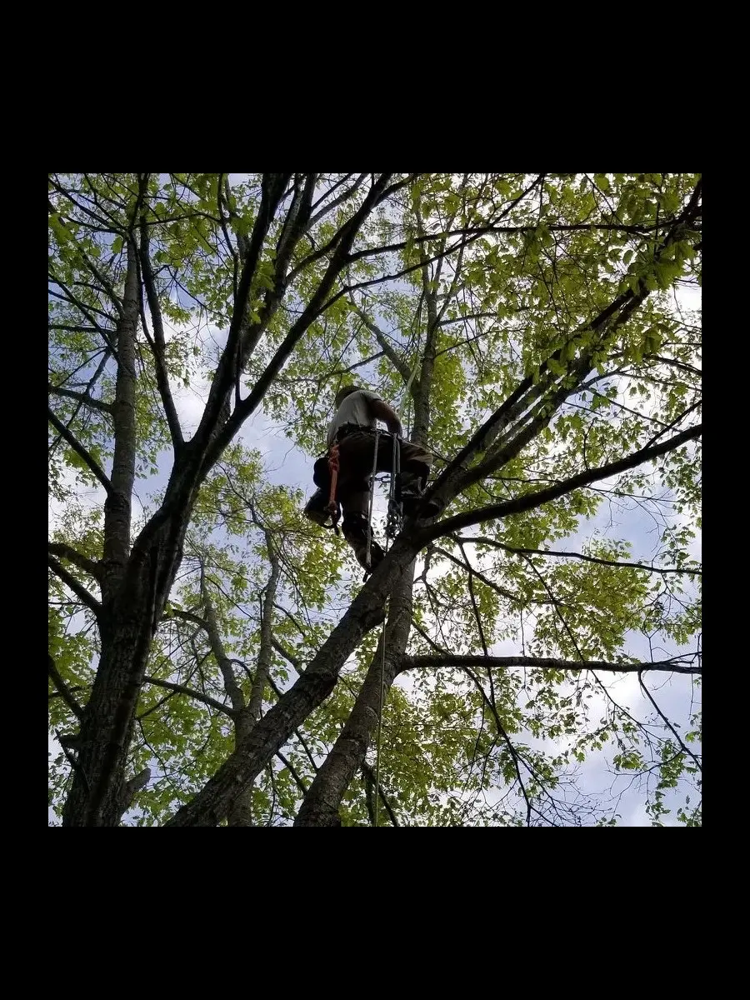

Tree Removal
Safe takedown of large, dead or hazardous trees — including tight spots near homes, fences and power lines, rigged down piece by piece.
Most requested
Tree removal, trimming, pruning and stump work across Independence and Grayson County — done carefully, cleaned up properly, and trusted enough that folks here use us season after season.
Big, dangerous removals handled — careful around homes, fences and power lines.
From a single risky tree leaning over the house to a full lot clearing, we bring the climbing skill and the cleanup to match. Here's the work we're called for most.
Safe takedown of large, dead or hazardous trees — including tight spots near homes, fences and power lines, rigged down piece by piece.
Most requestedThinning, deadwooding and shaping that keeps a tree healthy and your yard clear — pruned the right way, not just topped off.
Old stumps ground out below grade so you get your yard back — no more mowing around it or tripping over what's left.
Trees down or split after a Blue Ridge storm? We clear the danger, free up the drive and get your property back in order.
Opening up a view, a building site or an overgrown property line — selective clearing that leaves the good trees standing.
Every job ends the same way: limbs, brush and debris cleared out so the only thing left behind is the work we did.
Tree work is risky, heavy and easy to do badly. Here's what keeps folks around Independence calling All Seasons instead of someone new.
Technical, roped removals high in the canopy — the jobs a bucket truck or a homeowner with a chainsaw can't safely reach.
Reviewers single out how carefully large, dangerous trees come down near houses and yards — no torn-up landscaping, no surprises.
Customers describe using us "on many occasions." Repeat work in a small community is the only review that really counts.
The job isn't done when the tree is down — it's done when the brush is hauled and the ground is raked. Every time.
Call, tell us what you're looking at, and we'll come size it up honestly — what it takes, and what it doesn't.
Based right here in Independence — we know these hills, these hardwoods, and what a mountain storm does to them.
No drawn-out runaround — just a clear path from "that tree's worrying me" to a clean, cleared yard.
Tell us what you've got — a leaning tree, storm damage, a stump, a whole lot. Phone is fastest.
We come look in person, walk the job with you, and give you an honest, free estimate.
Rigged, climbed and cut the right way — protecting your home, your trees and everyone on the ground.
Brush and debris hauled off, ground raked down. You're left with the result, not the mess.
Real, unedited reviews from folks here on the mountain — 4.8 stars across 17 of them.
"Jose is a true professional and superb at the art of tree trimming and removal. I have used his expertise on many occasions. Probably the best arborist I have ever worked with."
"Jose was very polite and professional. He carefully removed many large and dangerous trees from the yard in a short amount of time."
Every photo here is our own crew on real jobs around the Blue Ridge — climbing, rigging, cutting and clearing.








Based in Independence and working throughout Grayson County and the nearby mountain communities of southwest Virginia. If you're a short drive from us, give a call — we'll let you know.
All Seasons Tree Service is a tree care crew based in Independence, Virginia, serving Grayson County and the surrounding Blue Ridge. The work is hands-on and skill-driven — careful climbing, smart rigging, and the kind of cleanup that leaves a yard better than we found it.
That care is what reviewers keep coming back to: large, dangerous trees brought down safely, work done politely and professionally, and customers who use us again and again.
"Probably the best arborist I have ever worked with." — a Google reviewer who's hired us on many occasions.
A few things people ask before booking tree work.
One call gets you an honest, free estimate from a crew your neighbors trust with the trees closest to their homes.